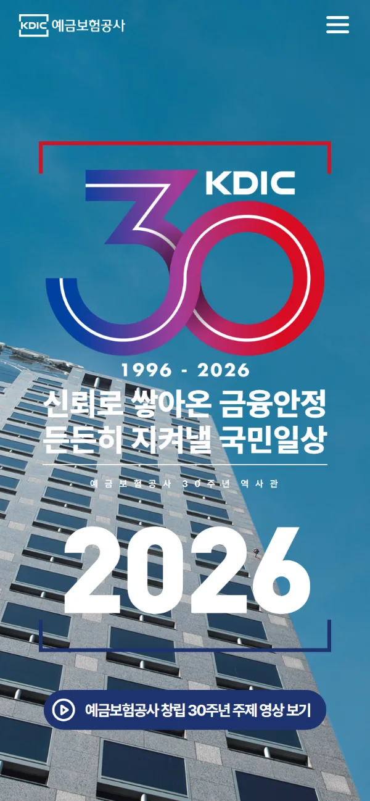
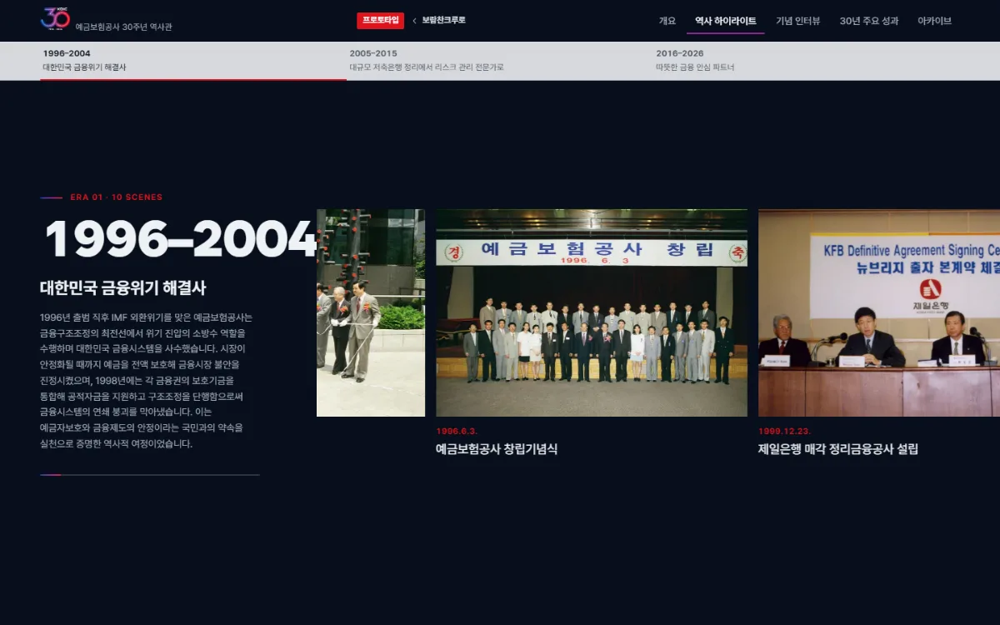
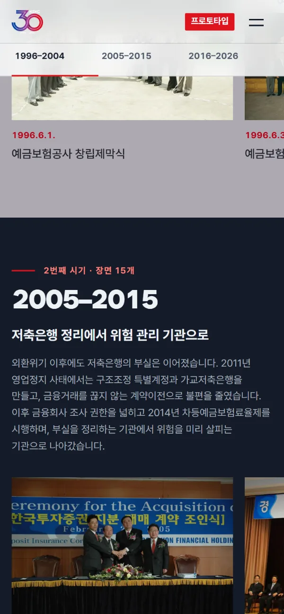
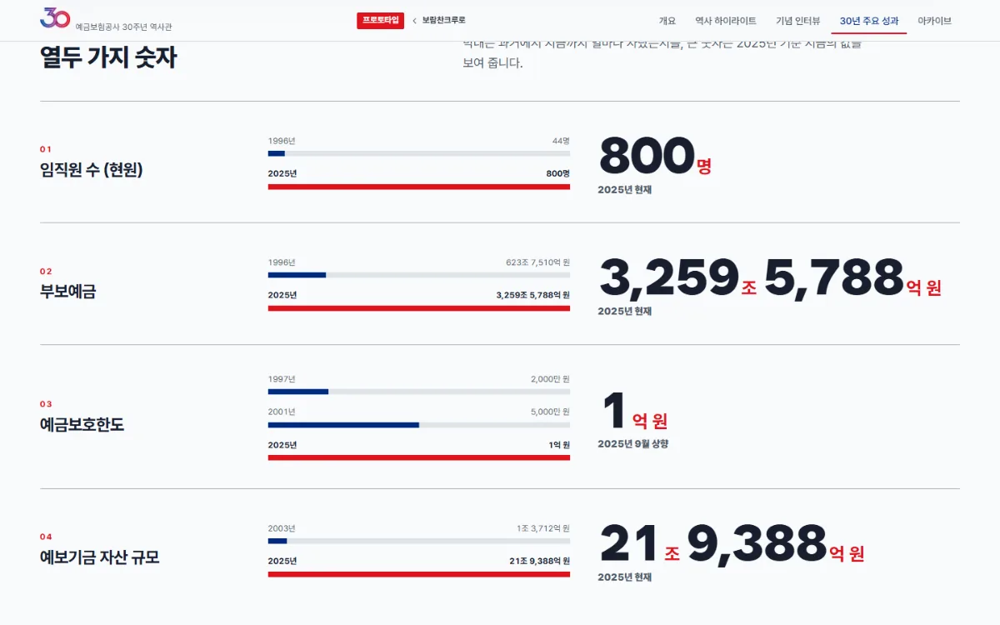
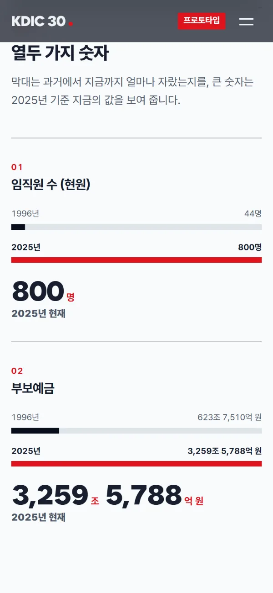
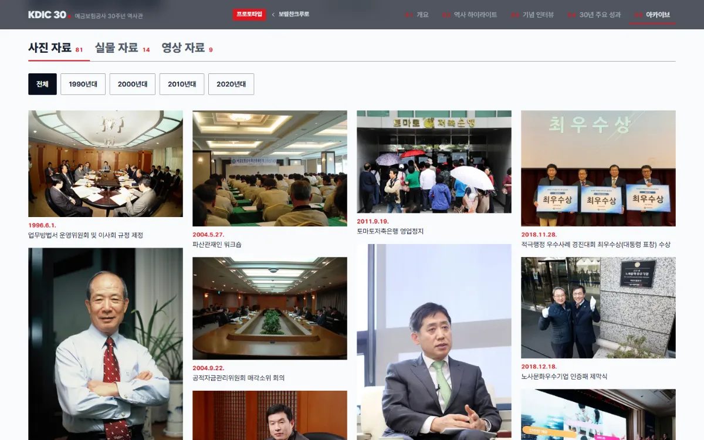
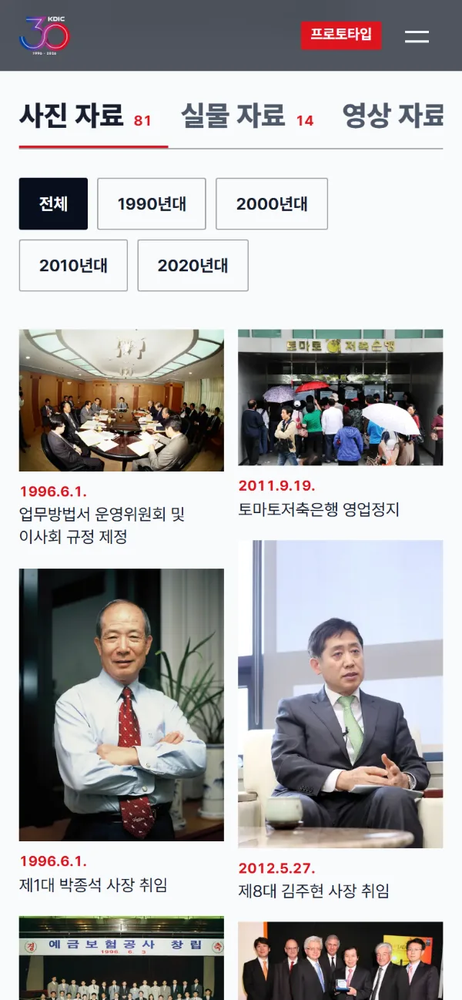

03프로토타입 · 금융공기업 30주년
KDIC 30
디지털 역사관
예금보험공사 창립 30주년 역사관(2026)의 글·사진·영상을 그대로 써서, 먹빛 바탕에 한 줄 빨강, 굴러가는 연도 숫자로 '신뢰의 기록'이 먼저 읽히는 역사관으로 다시 만들었어요.
01
화면 목업
PC·태블릿·휴대폰에서 같은 내용이 각 화면에 맞게 바뀌어요.
02
원본과 비교
가운데 손잡이를 좌우로 끌어 보세요(키보드 ← → 도 됩니다). 왼쪽이 원본, 오른쪽이 프로토타입이에요.
원본 · 휴대폰
첫 화면 한 장이 전부예요

프로토타입 · 휴대폰
스크롤하면 장면이 넘어가고 연도가 굴러요
03
무엇을 다르게 했나
원본의 남색·빨강·건물 사진을 이어받되, 면을 파랑으로 도배하지 않고 문서처럼 단단한 먹빛으로 잡았어요. KOGAS·승가원과 색·구성·움직임이 모두 달라요.
TONE
먹빛 남색 · 한 줄 빨강
서늘한 흰 종이와 먹빛 바탕에 로고의 빨강을 선·번호·강조에만. 신뢰와 기록의 무게를 문서 느낌으로.
TYPE
Wanted Sans 제목 + Pretendard
굵고 단단한 제목에 숫자는 폭이 같은 숫자꼴로. 두 글꼴 모두 OFL이라 상업 사용에 문제가 없어요.
FIRST VIEW
연도 다이얼
원본 메인의 1996→2026 숫자 세기를 살려, 큰 숫자가 주행계처럼 굴러가며 사진 장면이 바뀌어요. 휠을 살짝만 돌려도 한 장면씩.
GRID
원장(장부) 구성
번호 붙은 메뉴, 번호 줄 머리, 각진 모서리, 얇은 선. 숫자와 기록이 중심인 기관의 성격에 맞췄어요.
MOBILE
번호 메뉴 전체 화면
휴대폰 메뉴는 큰 번호 글자의 전체 화면 판. 모든 쪽을 여섯 화면 폭에서 검사해 가로 넘침 0.
SPEED
영상은 누를 때만
유튜브를 레이어 창으로 두고 누를 때만 불러와요. 원본처럼 주제 영상 버튼은 첫 화면에 그대로.
04
페이지별 구성
메인과 다섯 메뉴, 모두 6쪽. 쪽마다 들어간 내용과 움직임이에요.
PAGE 01 · index.html
메인
- 화면에 고정된 큰 사진 무대 위에서 휠을 살짝만 돌려도 다섯 장면(2026·1996·1998·2011·2025)이 아래에서 위로 닦이듯 바뀜
- 큰 연도 숫자가 주행계처럼 굴러 올라가고 오른쪽 눈금자의 빨간 표시가 따라옴(처음엔 1996→2026이 자동으로 굴러 오름)
- 원본처럼 '창립 30주년 주제 영상 보기' 버튼이 유튜브 레이어를 열어 바로 재생
- 큰 선언문이 스크롤에 맞춰 흐림→선명, 숫자 네 칸, 시기 세 줄, 인터뷰·아카이브 맛보기
연도 다이얼주행계 숫자닦이는 사진 전환읽는 자리 선명하게숫자 굴리기
PAGE 02 · overview.html
개요
- CEO 인사말: 왼쪽 사진·제목은 붙어 있고 오른쪽 문단이 읽는 자리에서 선명해짐
- 30주년 기념 영상 2편(사사 헌정식·비전 선포식)을 레이어로 재생
- 엠블럼·슬로건 의미를 먹빛 판 위에
붙는 사이드읽기 포커스영상 레이어


PAGE 03 · highlight.html
역사 하이라이트
- 세 시기, 43장면을 가로 필름으로
- 세로로 스크롤하면 화면이 고정된 채 사진 줄이 가로로 흐르고 진행 막대가 참
- 시기 막대가 따라다니며 지금 시기를 표시
- 사진을 누르면 크게 보기(방향키·밀기)
가로 필름 레일스크롤 연동 막대크게 보기
PAGE 04 · interview.html
기념 인터뷰
- 6개 파트, 26편의 인터뷰 영상
- PC는 왼쪽 파트 목차가 붙어 따라오며 지금 읽는 파트가 켜짐, 휴대폰은 위에 가로 칩 줄
- 영상 카드를 누르면 그 자리에서 유튜브 레이어로 재생
스크롤 목차붙는 목차영상 레이어


PAGE 05 · figures.html
30년 주요 성과
- 열두 지표를 원장처럼 한 줄씩: 과거→지금 막대 + 큰 숫자
- 막대는 화면에 들어오면 자라고 숫자는 굴러 오름
- 흐르는 큰 글자 띠로 핵심 숫자를 한 줄 요약
막대 자라기숫자 굴리기흐르는 띠


PAGE 06 · archive.html
아카이브
- 사진 81장·실물 14점·영상 9편을 탭으로
- 사진은 연대 칩(1990~2020년대)으로 걸러 보고 벽돌 배치, 누르면 크게 보기
- 사사(社史) E-BOOK 세 권 책장(원본 연결)
탭 + 연대 칩벽돌 갤러리크게 보기영상 레이어
05
디자인 · UI 구현 기술
보람찬크루 공통 컨벤션 그대로. 같은 부품 체계 위에 예금보험공사 팔레트(--kd-*)를 입혔어요.
- 구조
- 정적 HTML 6쪽. 원본 사이트에서 모은 자료(JSON)로 Node 스크립트가 쪽을 조립해요. 서버 프로그램이 필요 없어 고객 서버 어디에나 올릴 수 있어요.
- CSS
- @layer 7단계, BEM 이름, 블록 하나 = 파일 하나(부품 29개). 색은 --kd-* 토큰만 사용. position: sticky 고정 무대와 clip-path 닦임 전환, 주행계 숫자 띠(translate3d), 가로 필름 레일(스크롤 진행률 → CSS 변수), CSS columns 벽돌 갤러리, 흐르는 띠, @starting-style 레이어 창.
- JS 모듈
- 프레임워크 없이 ES 모듈 11개를 data-module·data-effect로 연결: scrollspy site-nav tab-filter viewer yt-dialog bar-grow count-up hscroll read-focus reveal year-dial
- 사진·영상
- 원본 사진 186장(썸네일 별도)을 WebP로 줄여 합계 11.1MB(한 장 200KB 이하). 모든 그림에 width·height, 화면 밖은 lazy. 유튜브는 누를 때만 불러오는 레이어 창(쿠키 줄인 주소).
- 반응형
- 휴대폰 우선. 360·390·820·1024·1280·1440px에서 가로 넘침 0. 메인은 휴대폰에서 평소 스크롤로 같은 장면 전환, 필름 레일은 손가락으로 넘기는 가로 목록, 목차는 위 칩 줄로.
- 성능
- 움직임은 transform·opacity·clip-path 위주, 스크롤 처리는 프레임당 한 번(rAF). 실제 크롬 창에서 스크롤 프레임을 재서 60fps 확인.
- 접근성
- 키보드만으로 메뉴·탭(← → Home End)·크게 보기·영상·단계 이동 사용, 동작 줄이기 설정이면 메인이 장면 목록으로 쌓이고 움직임 제거, 그림 대체 글, 본문 바로가기.
- 검색 제외
- noindex, nofollow, noimageindex 메타, 바깥 링크는 rel="nofollow". 모든 쪽 윗줄에 "프로토타입" 표시와 보람찬크루로 돌아가기 버튼.